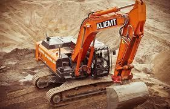
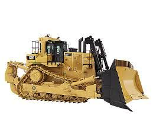
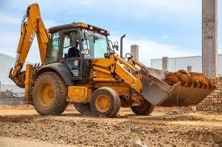
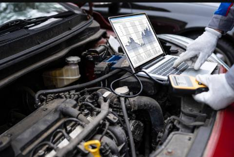
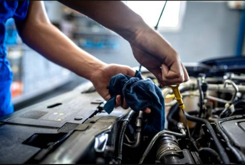
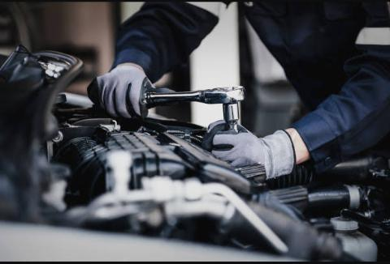

WMA Services Pty Ltd
Home
Contacts
About Us
Welcome to WMA Services – Your Trusted Partner in Earth Moving Machines Diagnostics, Repairs, and Services!
At WMA Services, we take pride in being a premier provider of comprehensive solutions for earth moving machines, specializing in
diagnostics, repairs, and services. With a dedicated focus on excavators, TLBs, JCBs, Bobcats, rollers, cranes as well as small vehicles and heavy
trucks like MAN trucks, ERF, TATA, and more, we bring over 20 years of invaluable experience to the field.

Our Commitment:
At the heart of WMA Services is a commitment to excellence and a passion for delivering top-notch services to our clients. We understand
the critical role that earth moving machinery plays in various industries, and our team of skilled technicians is here to ensure that your
equipment operates at peak performance.

Services We Offer:
Diagnostics:
Our state-of-the-art diagnostic tools enable us to quickly and accurately identify issues with your
machinery, ensuring a swift and efficient resolution.

Repairs:
Our team of experienced mechanics is adept at handling repairs of all magnitudes. Whether it's a minor issue or a
major overhaul, we've got you covered.

Services:
Regular maintenance is key to the longevity and optimal performance of your equipment. WMA Services provides
comprehensive servicing solutions tailored to meet the unique needs of each machine.

Roadside Assistance:
We understand that breakdowns can happen at the most inconvenient times. That's why WMA Services
offers reliable roadside assistance services nationwide. Wherever you are, whenever you need us, we're just a call away.
Service Area:
While based in Pretoria, WMA Services extends its expertise across the region, providing unparalleled support to clients in and around
Pretoria. Our commitment to excellence knows no bounds, and we proudly offer roadside assistance services to keep your operations running
smoothly, no matter where you are in the country.

Why Choose WMA Services:
Experience: With over two decades of hands-on experience in the field, WMA Services brings a wealth of knowledge to every project.
Quality Service: We prioritize quality in every aspect of our work, ensuring that our clients receive the best possible service.
Dedicated Team: Our team of skilled technicians is passionate about what they do, and their commitment to excellence is evident in every
job they undertake.

Partner with WMA Services for all your earth moving machine needs – because when it comes to diagnostics, repairs, and services, we're the
name you can trust!